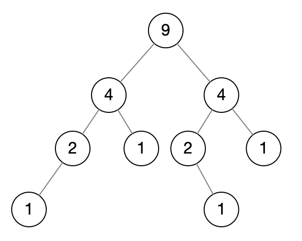

Random Node: You are implementing a binary search tree class from scratch which, in addition to insert, find, and delete, has a method getRandomNode() which returns a random node from the tree. All nodes should be equally likely to be chosen. Design and implement an algorithm for getRandomNode, and explain how you would implement the rest of the methods.
Hints: #42, #54, #62, #75, #89, #99, #112, #119
解法1
如果我们在一个数组里随机取一个元素，那么可以用array[random(0, array.length)]来获取。
而现在是二叉树，那么我们可以在二叉树里额外存一个node数组来实现这个。
但是这个数组在insert和delete下会存在额外开销：
- 如果是ArrayList，insert的时候均摊时间复杂度是O(1)（扩容的时候），delete的时候则是O(n)，因为牵涉到移动元素。
- 如果是LinkedList，insert的时候时间复杂度是O(1)，delete的时候则是O(n)，因为要搜索
而且占用额外的空间。
解法2
如果我们记录整棵树的节点数量，随机从[1, TREE_SIZE]中取一个数kth，然后通过pre-order来找到kth的节点。
public BinaryTree {
private Node root;
public Node getRandomNode() {
if (size == 0) {
return null;
}
int kth = random.nextInt(1, root.size);
return root.getKth(kth);
}
}
public Node {
private int size = 1;
private int data;
private Node left;
private Node right;
public void insertPreOrder(int data) {
if (this.left == null) {
this.left = new Node(data);
} else if (this.right == null) {
this.right = new Node(data);
}
this.left.insertPreOrder(data);
size++;
}
public Node getKth(kth) {
if (kth == 1) {
return this;
}
if (node.left != null) {
return getKth(node.left, --kth);
}
if (node.right != null) {
return getKth(node.right, --kth);
}
return null;
}
}时间复杂度：O(n)，虽然kth的随机范围在[1, TREE_SIZE]之间，但是实际上还是O(n)。
解法3
题目中提到的是BST：
public class Node {
private int size = 1;
private int data;
private Node left;
private Node right;
public Node(int data) {
// ...
}
public void insert(int data) {
if (data <= this.data) {
if (this.left == null) {
this.left = new Node(data);
} else {
this.left.insert(data);
}
} else {
if (this.right == null) {
this.right = new Node(data);
} else {
this.right.insert(data);
}
}
size++;
}
public Node find(int data) {
if (this.data == data) {
return this;
}
if (data < this.data) {
if (this.left != null) {
return this.left.find(data);
}
return null;
}
if (this.right != null) {
return this.right.find(data);
}
return null;
}
}看下面这张图：

每个节点都记录自己+子树的节点数量，root的size就是整棵树的size，我们随机从[1, TREE_SIZE]得到一个kth，作为第k个节点，我们要返回第k个节点。可以利用中序遍历来做。
public class Node {
public Node getKth(int kth) {
int leftSize = this.left == null ? 0 : this.left.size;
if (kth <= leftSize) {
// 说明在左子树中
return this.left.getKth(kth);
} else if (kth == leftSize + 1) {
// 说明就是自己
return this;
} else {
// 跳过了左子树和自己的节点数量，然后在右子树中找
return this.right.getKth(kth - (leftSize + 1));
}
}
}